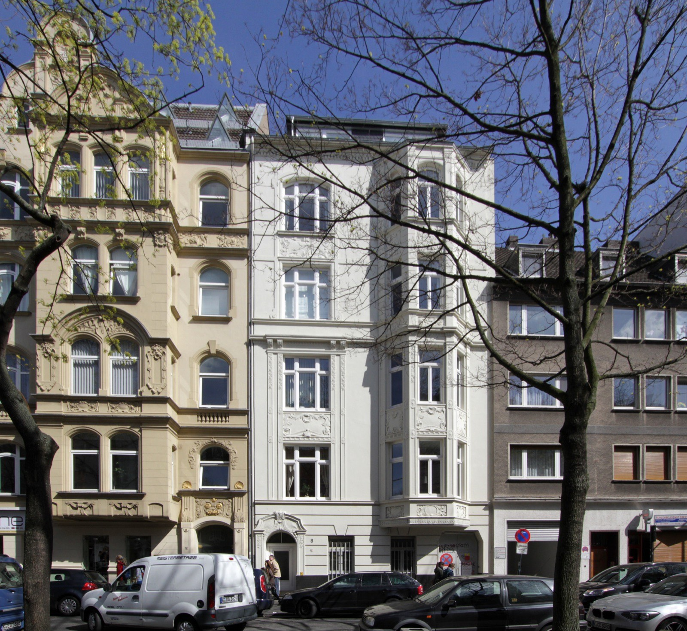
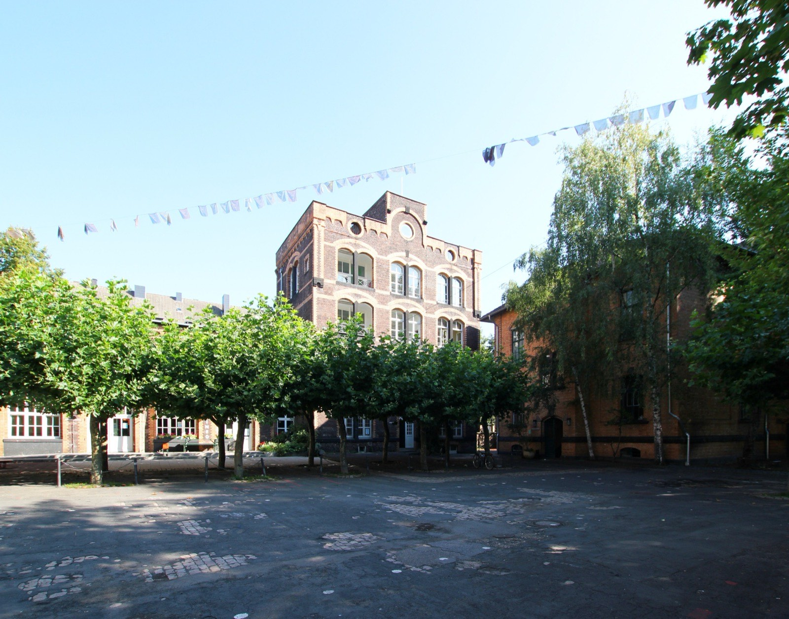

Immobilie in Köln-Neustadt-Nord verkaufen?Für diesen Stadtteil gibt es nicht einen Quadratmeterpreis, sondern drei.
5.571, 7.387 und 8.698 Euro je Quadratmeter — alle drei stehen im selben Marktbericht, alle drei gelten für Neustadt-Nord. Welcher für Ihre Wohnung zählt und welcher auf zu wenigen Verkäufen beruht, klären wir hier.
Was könnte Ihre Wohnung in Neustadt-Nord erzielen?
In sechs Schritten zu einer realistischen Einschätzung. Kostenlos, unverbindlich und ohne Vertrag. Womit fangen wir an?
Andere Objektart wählenDrei Preise für einen Stadtteil — und sie sind nicht gleich viel wert
Der Grundstücksmarktbericht 2026 wertet für Neustadt-Nord 208 beurkundete Wohnungsverkäufe des Jahres 2025 aus und teilt sie in drei Gruppen. Das ist ungewöhnlich: In den meisten Kölner Stadtteilen kommt nur eine einzige Gruppe auf genug Fälle für einen eigenen Wert.
- 5.571 Euro je Quadratmeter beim Weiterverkauf einer Bestandswohnung — aus 163 Verträgen
- 7.387 Euro beim Erstverkauf nach Aufteilung eines Miethauses — aus 6 Verträgen
- 8.698 Euro im Neubau — aus 39 Verträgen
Zwischen dem niedrigsten und dem höchsten Wert liegen 3.127 Euro auf jedem Quadratmeter, also 56 Prozent. Wer nur die große Zahl liest, hält seine Wohnung für deutlich mehr wert, als der Markt hergibt. Wer nur die kleine liest, verschenkt womöglich etwas.
Die Zahl in der Mitte sollten Sie mit Vorsicht behandeln
Sechs Verkäufe sind keine Marktaussage. Ein einziges gut saniertes Objekt in bester Lage hebt einen solchen Durchschnitt spürbar an, ein einziger Verkauf unter Zeitdruck zieht ihn herunter. Ich führe den Wert hier auf, weil er im Bericht steht — aber eine Bewertung würde ich nicht darauf stützen. Die 163 Weiterverkäufe dagegen sind eine der breitesten Grundlagen, die Köln für einen einzelnen Stadtteil zu bieten hat.
Die Grafik zeigt beides nebeneinander: oben, was gezahlt wurde, unten, auf wie vielen Verträgen die Zahl beruht.
Was die drei Segmente für Ihre Wohnfläche bedeuten
Stellen Sie die Wohnfläche ein. Die Balken zeigen, was dieselbe Fläche in den drei Segmenten gekostet hat — und wie belastbar die jeweilige Zahl ist.
Der Stadtteilschnitt liegt bei 69,4 m² je Wohnung.
Das entspricht ziemlich genau dem Stadtteilschnitt.
Abstand Bestand zu Neubau: 216.000 €
Durchschnitte aus beurkundeten Kaufverträgen des Jahres 2025. Sie sind keine Bewertung Ihrer Wohnung: Etage, Zustand, Grundriss, Ausrichtung, Hausgeld und Rücklage verschieben den Wert erheblich, und der Neubauwert gilt für Erstbezug mit heutigem Energiestandard. Was Ihr Objekt erzielen kann, klärt die kostenlose Bewertung.
Warum hier für 8.698 Euro je Quadratmeter gebaut wird
Im Kölner Preisvergleich liegt der Neubau in Neustadt-Nord auf Rang drei — hinter Marienburg mit 9.888 und Braunsfeld mit 9.170 Euro. Der entscheidende Unterschied steht daneben: Marienburg kommt auf elf Neubauverkäufe, Braunsfeld auf sechs. Neustadt-Nord auf 39. In der obersten Preisklasse ist das der einzige Kölner Stadtteil, in dem tatsächlich regelmäßig gehandelt wird.
Auch beim Bauen selbst gehört der Stadtteil zur Spitze: 227 neue Wohnungen kamen 2025 hinzu, Rang fünf unter 86 Stadtteilen. Für ein Viertel innerhalb der Ringe ist das bemerkenswert — zum Vergleich: Im benachbarten Neustadt-Süd waren es 99.
Der MediaPark liefert die Nachfrage gleich mit
Das Gelände des früheren Güterbahnhofs Gereon trägt heute den MediaPark mit rund 250 Firmen und etwa 5.000 Arbeitsplätzen. Wer dort arbeitet und kauft, sucht Wohnungen in Laufweite — eine Nachfrage, die sich nicht auf ganz Köln verteilt, sondern in diesem Stadtteil landet.
Dazu kommt die Höhe, die es sonst nirgendwo in Köln so gibt: der 148 Meter hohe KölnTurm von Jean Nouvel als höchstes Hochhaus der Stadt, der 266 Meter hohe Colonius als höchstes Bauwerk überhaupt, und das Hansahochhaus, das 1925 das höchste Hochhaus Europas war. Wohnungen in solchen Lagen werden nicht über den Quadratmeterpreis verkauft, sondern über Aussicht, Grundriss und Ausstattung.
Was das für Sie bedeutet, wenn Sie Bestand verkaufen
Der Neubau setzt in Neustadt-Nord nicht die Messlatte, sondern die Obergrenze. Bei 69 Quadratmetern trennen die beiden Segmente rund 216.000 Euro. Kaum ein Käufer, der Ihre Bestandswohnung besichtigt, hat den Neubau ernsthaft als Alternative — er kann ihn sich schlicht nicht leisten. Das ist für Sie eher eine gute Nachricht: Ihre eigentliche Konkurrenz sind die anderen 162 Bestandswohnungen, die im selben Jahr verkauft wurden.
Umgekehrt gilt aber auch: Wer den Neubaupreis als Argument für die eigene Altbauwohnung heranzieht, verliert Interessenten in den ersten zwei Wochen. Ein zu hoch angesetzter Preis kostet keine Zeit, er kostet die aufmerksamsten Käufer — und die schauen zuerst.
Der Markt, um den es wirklich geht: 163 Verkäufe im Bestand
Die Wohnungen in Neustadt-Nord sind im Mittel 69,4 Quadratmeter groß, knapp acht weniger als im Kölner Schnitt von 77,3. 65,3 Prozent der Haushalte bestehen aus einer Person, stadtweit sind es 51,9 Prozent; nur 10,8 Prozent leben mit Kindern gegenüber 17,7 in Köln. Der typische Käufer hier ist also eine einzelne Person oder ein Paar, und die suchen keine Familienwohnung.
Eine Zahl fällt trotzdem aus dem Rahmen: Auf den einzelnen Bewohner entfallen 44,0 Quadratmeter Wohnfläche, mehr als im Kölner Mittel von 40,6. Kleinere Wohnungen, aber mehr Platz je Person — weil hier selten mehrere Menschen eine Wohnung teilen.
Zwei Bauarten, zwei Käufergruppen

Neustadt-Nord ist wie die Neustadt-Süd ein Gründerzeitviertel, das im Krieg schwer getroffen wurde. Was blieb, steht heute direkt neben dem Wiederaufbau der Nachkriegsjahre — oft in derselben Straße, manchmal Wand an Wand. Für den Verkauf sind das zwei verschiedene Produkte:
Beim Altbau zahlen Käufer für Deckenhöhe, Raumproportionen, Stuck und Fensterformate. Das sind Eigenschaften, die kein Neubau nachbilden kann — die aber in Exposés regelmäßig untergehen, weil sie den Eigentümern selbstverständlich erscheinen. Dagegen stehen Fragen, die früh kommen und die Sie beantwortet haben sollten: Energieausweis, Heizung, Fenster, Zustand des Dachs, Höhe der Erhaltungsrücklage und beschlossene Maßnahmen der Eigentümergemeinschaft.
Beim Nachkriegsbau läuft es umgekehrt. Hier zählen Grundriss, Aufzug, Balkon, Stellplatz und Betriebskosten. Wer eine solche Wohnung mit Altbau-Argumenten bewirbt, spricht die falsche Gruppe an.
Noch eine Zahl gehört zum Bild: Von den 18.325 Wohnungen sind ganze 1,32 Prozent öffentlich gefördert, gut 240 Einheiten. Rechnerisch trifft ein Käufer hier auf rund 75 freifinanzierte Wohnungen, bevor ihm eine geförderte begegnet. Wer verkauft, konkurriert deshalb ausschließlich mit dem freien Markt — und sollte wissen, dass die Interessenten, die es bis zur Besichtigung schaffen, ihre Finanzierung meist schon geklärt haben.
Welcher der drei Preise gilt für Ihre Wohnung?
Wir ordnen Ihr Objekt in das richtige Segment ein und rechnen mit Vergleichsfällen aus Neustadt-Nord, nicht mit einem Kölner Mittelwert.
Marktdaten Köln-Neustadt-Nord
- Bodenrichtwert
- 1.810–2.140 €/m²Median 2.090 · 3 Zonen · Stichtag 1.1.2026
- Wohnung, Weiterverkauf
- 5.571 €/m²163 Kaufverträge 2025
- Wohnung, Neubau
- 8.698 €/m²39 Kaufverträge 2025
- Wohnung, nach Aufteilung
- 7.387 €/m²nur 6 Kaufverträge 2025
- Wohnungsbestand
- 18.325 Wohnungen69,4 m² im Schnitt · 227 Neubauten 2025
Amtliche Werte — Quellen und Methodik.
Beim Boden sind sich die Lagen einig — bei den Häusern nicht
BORIS NRW weist zum 1. Januar 2026 für Neustadt-Nord nur drei Wohnbauland-Zonen aus, zwischen 1.810 und 2.140 Euro je Quadratmeter, Median 2.090. Zum Vergleich: Der Nachbarstadtteil Neustadt-Süd hat sechs Zonen mit einer Spanne von 490 Euro, hier sind es 330.
Das ist eine nützliche Information für Verkäufer. Wenn der Boden im ganzen Stadtteil ähnlich bewertet wird, entstehen die großen Preisunterschiede zwischen zwei Wohnungen nicht aus der Adresse, sondern aus dem Gebäude und der Wohnung selbst — Baujahr, Zustand, Etage, Aufzug, Grundriss, Ausrichtung. Genau dort lohnt sich die Vorbereitung, und genau dort entscheidet sich der Preis.
Was die Teillagen dennoch unterscheidet
Das Agnesviertel rund um die Kirche St. Agnes und die Neusser Straße ist die bekannteste Wohnlage des Stadtteils und wird oft eigenständig gesucht — viele Interessenten geben „Agnesviertel" ein, nicht „Neustadt-Nord". Wer hier verkauft, sollte den Namen im Exposé führen.

Rund um den MediaPark steht der jüngste Bestand, dazu die Neubauten, aus denen die 8.698 Euro stammen. Käufer sind hier häufig Berufstätige mit kurzem Arbeitsweg; Ausstattung und Energiestandard zählen mehr als Baujahrromantik.
An den Ringen — Hohenzollernring, Friesenplatz — liegen Ausgehen und Anbindung direkt vor der Tür, zusammen mit der stärksten Verkehrsbelastung. Für Kapitalanleger ist das oft nebensächlich, für Selbstnutzer selten. Fenster, Ausrichtung und Innenhof sind hier die Fragen, die früh kommen.
Am Stadtgarten und zum Inneren Grüngürtel hin zählt die Nähe zum Grün. 24,2 Prozent der Fläche von Neustadt-Nord sind Erholungsfläche einschließlich Friedhöfen — der höchste Wert aller Stadtteile im Bezirk Innenstadt und mehr als das Doppelte des Kölner Mittels von 11,5 Prozent. Bei Wohnungen ohne Balkon ersetzt der Park den Außenbereich; die Entfernung in Gehminuten gehört deshalb ins Exposé.
Zum Rhein hin, am Konrad-Adenauer-Ufer und an der Bastei, kommen Blickbeziehungen ins Spiel, die zwei sonst vergleichbare Wohnungen weit auseinanderziehen können.
Der Bahnhof Köln-West ist ein eigener Haltepunkt der Deutschen Bahn im Stadtteil — ein Argument, das bei Pendlern zieht und in Wohnungsanzeigen fast nie auftaucht.
Richtwerte, kein Preisschild. Für Ihr Objekt zählt der Zustand im Detail — dafür rechnen wir kostenlos eine Wertindikation oder kommen persönlich vorbei.
Auch tätig im Stadtbezirk Innenstadt und Umgebung:
Was Eigentümer in Neustadt-Nord am häufigsten fragen
Für die allermeisten Eigentümer der Bestandswert von 5.571 Euro je Quadratmeter aus 163 Kaufverträgen. Der Neubauwert von 8.698 Euro gilt für Erstbezug mit heutigem Energiestandard und aktueller Haustechnik — er ist keine Vergleichsgröße für eine Wohnung von 1908 oder 1958. Der Aufteilungswert von 7.387 Euro beruht auf nur sechs Verkäufen und taugt nicht als Richtwert. Welches Segment für Sie zählt, klären wir anhand von Baujahr, Zustand und Verkaufsart.
Neubaukäufer bezahlen Erstbezug, aktuelle Energiestandards, moderne Haustechnik und meist Aufzug, Balkon und Stellplatz. Dazu kommt in Neustadt-Nord die besondere Nachfragelage: Der MediaPark bringt rund 250 Firmen und etwa 5.000 Arbeitsplätze direkt ins Viertel. Für Sie als Verkäufer einer Bestandswohnung ist der Abstand eher entlastend — bei 69 Quadratmetern liegen rund 216.000 Euro dazwischen, und die meisten Ihrer Interessenten haben den Neubau gar nicht als echte Alternative.
Davon rate ich ab. Ein zu hoch angesetzter Preis kostet nicht in erster Linie Zeit, sondern die aufmerksamsten Interessenten — und die schauen in den ersten beiden Wochen. Wird der Preis später gesenkt, ist der frühe Schwung weg und die Wohnung gilt als Ladenhüter. Sinnvoller ist, die Stärken des Altbaus ausdrücklich zu benennen: Deckenhöhe, Raumproportionen, Stuck, Fensterformate. Das kann ein Neubau nicht bieten.
Das Agnesviertel ist keine eigene statistische Einheit, sondern Teil von Neustadt-Nord — amtliche Zahlen gibt es nur für den ganzen Stadtteil. Der Name hat für die Vermarktung trotzdem Gewicht, weil viele Interessenten gezielt danach suchen und nicht nach „Neustadt-Nord". Er gehört deshalb ins Exposé. Den Wert selbst bestimmen Baujahr, Zustand, Etage, Aufzug, Grundriss und die Lage im Haus.
BORIS NRW weist zum 1. Januar 2026 drei Wohnbauland-Zonen zwischen 1.810 und 2.140 Euro je Quadratmeter aus, der Median liegt bei 2.090. Die Spanne von 330 Euro ist für einen Innenstadtteil eng — im Nachbarstadtteil Neustadt-Süd sind es 490 Euro über sechs Zonen. Praktisch heißt das: Die Adresse macht beim Boden wenig Unterschied, entscheidend sind Zuschnitt, Bebaubarkeit, Geschossflächenzahl, vorhandene Bebauung und Baulasten.
Die Zahlenbasis dafür ist in Neustadt-Nord dünn: sechs Verkäufe im Jahr 2025. Daraus lässt sich kein verlässlicher Aufschlag ableiten. Grundsätzlich gilt in Köln, dass die Aufteilung derzeit nicht nach § 250 Baugesetzbuch genehmigungspflichtig ist, weil Nordrhein-Westfalen keine entsprechende Verordnung erlassen hat — anders als Bayern, Berlin und Hamburg (Übersicht des Deutschen Notarinstituts vom 20. Januar 2026). Zu bedenken ist aber die Mieterschutzverordnung NRW vom 1. März 2025: Bei umgewandelten und verkauften Wohnungen ist eine Eigenbedarfs- oder Verwertungskündigung in Köln erst acht Jahre nach dem Verkauf möglich. Das verengt den Käuferkreis erheblich. Wir rechnen beide Wege durch; die rechtliche Prüfung gehört zu Notar oder Fachanwalt.
Weniger, als viele befürchten. 24,2 Prozent der Fläche von Neustadt-Nord sind Erholungsfläche, mehr als das Doppelte des Kölner Mittels von 11,5 Prozent und der höchste Wert im Bezirk Innenstadt. Stadtgarten, Innerer Grüngürtel und das Rheinufer liegen für die meisten Adressen in Gehweite. Entscheidend ist, dass diese Entfernung im Exposé steht — in Gehminuten, nicht als Floskel.
Nein. Der Stadtteilschnitt liegt bei 69,4 Quadratmetern, und 65,3 Prozent aller Haushalte in Neustadt-Nord bestehen aus einer einzigen Person — gegenüber 51,9 Prozent in Köln. Nur 10,8 Prozent leben mit Kindern. 62 Quadratmeter liegen damit mitten im Zielbereich. Über den Preis entscheidet weniger die Fläche als das, was daraus geworden ist: zwei vernünftige Zimmer statt eines plus Durchgang, Tageslicht im Bad, Schlafzimmer zum Hof statt zum Ring.
Häuser tauchen in der Statistik für Neustadt-Nord gar nicht erst als eigene Gruppe auf: In einem Stadtteil mit 18.325 Wohnungen und geschlossener Blockrandbebauung wechseln zu wenige den Besitzer. Wer hier ein Haus verkauft, verkauft einen Einzelfall — und Einzelfälle rechnet man nicht über einen Quadratmeterpreis, sondern über das Objekt als Ganzes: Grundstückszuschnitt, Bausubstanz, Energieträger, Ausbaureserven im Dach, Stellplatzsituation. Häufig steht zusätzlich die Frage im Raum, ob eine Aufteilung wirtschaftlich mehr bringt als der Verkauf im Ganzen.
Eine seriöse Pauschalangabe gibt es nicht — sie hinge von Preis, Objekt und Jahreszeit ab. Was sich sagen lässt: Mit 208 beurkundeten Wohnungsverkäufen im Jahr 2025 ist Neustadt-Nord einer der umsatzstärksten Wohnungsmärkte Kölns. An fehlender Nachfrage scheitert hier selten etwas; deutlich häufiger am Einstiegspreis oder an Unterlagen, die während der Vermarktung erst noch beschafft werden müssen. Unsere Unterlagencheckliste zeigt, was vorab zusammengehört.
Nein. Die Bewertungsanfrage ist kostenlos und unverbindlich. Durch die Anfrage entsteht kein Maklerauftrag.
Bildnachweis: MediaPark und KölnTurm: Raimond Spekking, CC BY-SA 4.0 · Agnesviertel, Sudermanstraße 8 und Alte Feuerwache: HOWI – Horsch, Willy, CC BY 3.0, alle über Wikimedia Commons. Marktdaten: Gutachterausschuss für Grundstückswerte in der Stadt Köln (Grundstücksmarktbericht 2026, Berichtsjahr 2025), BORIS NRW zum 1. Januar 2026, Stadt Köln – Amt für Stadtentwicklung und Statistik (Einwohner, Haushalte und Wohnungsbestand zum 31. Dezember 2025; Stadtfläche und Erholungsflächenanteil aus den Kölner Stadtteilinformationen). Rechtsstand: § 250 BauGB nach der Übersicht des Deutschen Notarinstituts vom 20. Januar 2026, Mieterschutzverordnung NRW vom 1. März 2025. Keine Rechtsberatung.